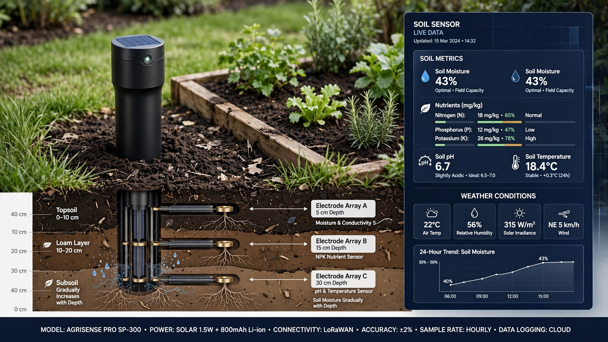

System and Method for Predictive Residential Soil Nutrient Management Using In-Ground Electrochemical Microsensor Arrays and Weather-Correlated Machine Learning Uptake Models

Abstract
Disclosed is a system and method for predictive soil nutrient management in residential lawns and gardens using a network of low-cost in-ground electrochemical microsensor probes. Each probe contains ion-selective electrode (ISE) arrays that continuously measure soil concentrations of nitrate (NO₃⁻), ammonium (NH₄⁺), potassium (K⁺), and phosphate (H₂PO₄⁻), alongside ancillary sensors for pH, volumetric water content (VWC), electrical conductivity (EC), and soil temperature at multiple depths (5 cm, 15 cm, 30 cm). An on-device microcontroller transmits sensor readings via Bluetooth Low Energy (BLE) to a gateway hub, which runs a weather-correlated machine learning model that predicts nutrient depletion trajectories for each soil zone based on plant species uptake curves, historical precipitation, forecast rainfall, temperature-driven microbial activity rates, and irrigation schedules. The system generates specific fertilizer type, application rate (in grams per square meter), and timing recommendations that minimize total nitrogen applied while maintaining plant-available nutrient concentrations within species-specific optimal ranges. Integration with smart irrigation controllers enables automated fertigation scheduling. The system reduces residential fertilizer runoff to municipal stormwater systems by an estimated 35-60% compared to calendar-based application programs by eliminating unnecessary applications and right-sizing necessary ones.
Field of the Invention
This invention relates to precision nutrient management for residential landscapes, specifically to continuous in-situ soil chemistry monitoring using consumer-grade electrochemical sensor arrays combined with predictive machine learning models for automated fertilizer dosing optimization.
Background
Residential lawns and gardens in the United States receive an estimated 3.2 million metric tons of nitrogen fertilizer annually (EPA Nutrient Pollution Sources), roughly 30% of total non-agricultural nitrogen application. The USGS National Water-Quality Assessment found that 60-70% of residential nitrogen application ends up in groundwater or surface runoff, contributing to eutrophication, harmful algal blooms, and drinking water contamination. The economic cost of nutrient pollution in the United States exceeds $2.2 billion annually in drinking water treatment alone (Dodds et al., Environmental Science & Technology, 2009).
Current residential fertilization practice relies on calendar-based programs:
- Seasonal programs: Most lawn care companies prescribe 4-6 applications per year at fixed intervals (e.g., every 6-8 weeks during growing season), regardless of soil nutrient status. Scotts Miracle-Gro's "4-Step Program" applies a fixed 3.7 kg N/100 m² annually. University of California Cooperative Extension recommends 2-4 lb N/1000 ft² for cool-season turf, but actual homeowner application rates are 40-80% above recommendations (Carey et al., Landscape and Urban Planning, 2013).
- Soil testing: University extension offices offer soil testing at $15-25 per sample, with 2-3 week turnaround. Typical homeowner testing frequency: once every 2-5 years, if at all. Results provide a single-point-in-time snapshot that cannot capture seasonal dynamics, post-rain leaching events, or week-to-week depletion patterns.
- Consumer soil sensors: Products like Edyn Garden Sensor ($100, discontinued 2018), Soil IQ ($150, discontinued 2020), and Xiaomi Flora Care ($30) measure moisture, temperature, light, and EC but do not perform direct nutrient speciation. EC correlates loosely with total dissolved salts but cannot distinguish between nitrogen, phosphorus, and potassium fractions. None provide predictive depletion modeling.
Precision agriculture has developed sophisticated soil nutrient sensing for farm-scale operations. Nagraik et al., Scientific Reports 2020 demonstrated ISE-based nitrate sensors achieving 98.2% accuracy against laboratory colorimetric analysis in field conditions. Adamchuk et al., Computers and Electronics in Agriculture, 2004 reviewed on-the-go soil sensing technologies for variable-rate fertilization. Commercial systems like Veris Technologies' MSP3 ($45,000+) and CropX ($500/sensor + subscription) are designed for field-scale deployment with tractor-mounted or grid-pattern installations unsuitable for residential use. US10539537B2 (Veris Technologies) describes a mobile soil sensing system for agricultural fields using coulter-based electrode insertion during tillage passes.
The gap in the art is a consumer-grade system that: (a) performs continuous, in-situ measurement of individual plant-available nutrient species at residential price points ($50-80 per probe); (b) models nutrient dynamics over time rather than providing single snapshots; (c) integrates weather data to predict leaching losses and microbial mineralization rates; (d) generates actionable, product-specific fertilizer recommendations with precise application rates; and (e) coordinates with smart irrigation systems for optimal fertigation timing.
Detailed Description
1. Sensor Probe Hardware
Each sensor probe is a vertical spike designed for semi-permanent installation in residential soil (pushed in by hand, removed for winter storage in freeze-prone climates). The probe body is constructed from UV-stabilized polycarbonate (IP68 rated) with a tapered stainless steel tip for soil penetration. Length: 35 cm, exposed sensor region: 25 cm, above-ground cap: 5 cm containing the electronics module. The probe contains sensor elements at three depth zones (5 cm, 15 cm, 30 cm) to capture the vertical nutrient gradient within the root zone.
At each depth zone, the following sensors are integrated:
- Nitrate ISE: A PVC membrane incorporating tridodecylmethylammonium nitrate (TDMA-NO₃) as the ionophore, with a detection range of 10⁻⁵ to 10⁻¹ M (0.62 to 6,200 ppm NO₃-N). The membrane is deposited on a screen-printed silver/silver chloride (Ag/AgCl) electrode substrate. Unit sensor cost: $1.80. Nernstian response slope: -54 to -58 mV/decade at 25°C. Selectivity coefficients: log K(NO₃⁻/Cl⁻) = -2.1, log K(NO₃⁻/SO₄²⁻) = -3.4, ensuring adequate discrimination against common soil anions.
- Ammonium ISE: Nonactin-based PVC membrane on Ag/AgCl substrate. Detection range: 10⁻⁵ to 10⁻¹ M (0.18 to 1,800 ppm NH₄-N). Selectivity: log K(NH₄⁺/K⁺) = -1.6 (requires K⁺ compensation from the co-located potassium ISE). Unit cost: $1.50.
- Potassium ISE: Valinomycin-based PVC membrane. Detection range: 10⁻⁶ to 10⁻¹ M. Selectivity: log K(K⁺/Na⁺) = -4.0. Unit cost: $1.30.
- Phosphate ISE: A cobalt wire electrode whose open-circuit potential responds to phosphate via surface complexation, as demonstrated by Xiao et al., Analytical Chemistry 1995. Detection range: 10⁻⁵ to 10⁻² M. Selectivity is poorer than membrane ISEs; the system compensates by applying a random forest correction model trained on concurrent ISE readings and laboratory reference data. Unit cost: $0.90.
- pH electrode: Antimony oxide solid-state pH sensor, range 3.5-9.0, accuracy ±0.15 pH units. Unit cost: $0.80.
- Volumetric water content (VWC): Capacitive moisture sensor using the probe body as one electrode plate and a ring electrode as the second, operating at 70 MHz. Range: 0-60% VWC, accuracy ±3%. Unit cost: $0.40.
- Temperature: DS18B20 digital thermometer, ±0.5°C accuracy. Unit cost: $0.50.
- Electrical conductivity: Four-electrode AC conductivity cell at 1 kHz excitation. Range: 0-20 dS/m. Unit cost: $0.60.
The electronics module in the above-ground cap contains: a low-power microcontroller (Nordic nRF52840, $3.50) with BLE 5.2 connectivity; a 16-bit analog-to-digital converter (ADS1115, $2.00) multiplexed across the ISE channels; a potentiostat circuit for the cobalt phosphate electrode; a solar cell (0.5W, 50 mm diameter) with 400 mAh LiPo battery providing continuous operation without maintenance; and an NFC antenna for initial provisioning and firmware updates. Target bill-of-materials cost per complete probe: $55-75. Target retail price: $79-99.
2. ISE Calibration and Drift Compensation
ISE sensors are subject to drift over deployment periods exceeding 30 days. The system implements a multi-factor drift compensation strategy:
- Two-point factory calibration: Each probe is factory-calibrated in standard solutions before shipment. Calibration parameters (slope and offset per ISE) are stored in non-volatile memory and referenced via NFC during setup.
- In-situ reference correction: An internal micro-reservoir (0.3 mL) of certified reference solution is sealed within the probe. Once every 14 days, a microvalve opens the reservoir to contact the ISE membranes for a 60-second reference measurement, after which capillary action reseals the reservoir. This provides an autonomous single-point recalibration without user intervention. Reservoir lifetime: approximately 18 months (26 calibration cycles).
- Cross-sensor consistency checks: The ML model monitors internal consistency between the three depth zones and flags sensor anomalies. A nitrate reading at 5 cm that spikes while 15 cm and 30 cm remain stable is more likely a membrane fouling artifact than a real agronomic event, and the model applies a Kalman filter correction informed by the expected vertical diffusion dynamics.
- User-initiated ground truth: The companion app prompts users to submit a professional soil test ($15-25, widely available through county extension offices) once per season. The laboratory results are ingested as high-confidence ground truth data points, and a per-probe affine correction (slope + offset) is computed for each ISE channel to compensate for any residual long-term drift.
3. Weather-Correlated Nutrient Depletion Model
The central innovation of this system is a predictive model that forecasts nutrient depletion trajectories 7-14 days forward by integrating sensor readings with external environmental data. The model runs on the gateway hub (a BLE-to-WiFi bridge, e.g., ESP32-S3 with 8 MB PSRAM) and comprises three sub-models:
3a. Plant uptake model: A species-specific nutrient uptake curve parameterized by growing degree days (GDD). During setup, the user identifies the dominant plant species per zone (e.g., Kentucky bluegrass, Bermudagrass, tomato, rose). The model retrieves literature-derived uptake parameters: for Kentucky bluegrass, nitrogen uptake follows a sigmoidal curve peaking at 0.35 g N/m²/week at 25°C with a Q₁₀ temperature coefficient of 2.1, reducing to near-zero uptake below 5°C soil temperature. These parameters are sourced from Bowman et al., Crop Science, 1985 and Frank et al., HortScience, 2004. Phosphorus and potassium uptake follow analogous species-specific models.
3b. Loss model: Nutrient losses occur through three primary pathways, each modeled separately:
- Leaching: Nitrate, being anionic and highly soluble, leaches with drainage water below the root zone. The model uses a simple piston-flow displacement approach: when cumulative precipitation + irrigation exceeds field capacity at a given depth, the excess water pushes the nitrate front downward at a rate proportional to VWC/field capacity. Forecast precipitation from the National Weather Service API (hourly, 7-day) is integrated to predict post-rain leaching losses before they occur.
- Denitrification: When VWC exceeds 80% of saturation and soil temperature exceeds 10°C, anaerobic microsites form and denitrifying bacteria convert nitrate to gaseous N₂O and N₂. The denitrification rate is modeled as a first-order function of nitrate concentration, VWC above threshold, and temperature using the Arrhenius equation with an activation energy of 60 kJ/mol, following Stanford et al., Soil Biology & Biochemistry, 1975.
- Surface runoff: For sloped zones (user-specified or LiDAR-derived from publicly available USGS 3DEP data), rainfall intensity exceeding the infiltration rate (estimated from soil texture class and antecedent moisture) generates surface runoff that carries dissolved and particulate nutrients off-site.
3c. Mineralization model: Organic nitrogen in soil organic matter is continuously mineralized to plant-available ammonium by microbial communities. The mineralization rate is temperature-dependent (Q₁₀ = 2.0) and moisture-dependent (optimal at 60% water-filled pore space, declining at both extremes). The model estimates a site-specific organic nitrogen pool from the initial soil EC reading and user-provided soil test organic matter percentage, then predicts the weekly mineralization contribution to the plant-available nitrogen pool.
The composite model runs a daily forward simulation: starting from the current sensor-measured nutrient concentrations, it projects day-by-day depletion (uptake + losses) and replenishment (mineralization + any scheduled fertilizer) for 14 days. When projected plant-available nitrogen drops below the species-specific minimum threshold (e.g., 15 ppm NO₃-N for Kentucky bluegrass), the system triggers a fertilization recommendation. A gradient-boosted regression tree (XGBoost, ~200 trees, max depth 6) trained on aggregated data from deployed sensor networks refines the process-based model predictions, correcting for systematic biases in the mechanistic sub-models.
4. Fertilizer Recommendation Engine
When a nutrient deficiency is predicted, the recommendation engine computes the specific product, rate, and timing:
- Product selection: The system maintains a database of commercially available fertilizer products with their guaranteed analyses (N-P-K percentages and nutrient forms: slow-release urea, ammoniacal, nitrate, water-soluble P₂O₅, water-soluble K₂O). Given the diagnosed nutrient deficiency profile (e.g., nitrogen-only, nitrogen + potassium), the engine selects the product with the closest matching ratio from the user's previously purchased products (barcode-scanned during setup) or recommends a new product.
- Rate calculation: The application rate (grams of product per square meter) is computed to bring the projected nutrient level to the midpoint of the optimal range, accounting for: fertilizer use efficiency (FUE) by nutrient form (slow-release N: 65-80% FUE, quick-release N: 40-60% FUE), expected precipitation-driven losses in the 7 days following application, and soil pH influence on phosphorus availability (aluminum/iron fixation below pH 5.5, calcium fixation above pH 7.5).
- Timing optimization: The engine selects the optimal application day by minimizing a loss function that balances: (a) days below the nutrient deficiency threshold (plant stress cost), (b) probability of heavy rainfall within 48 hours post-application (runoff risk cost, weighted from NWS precipitation probability forecasts), and (c) soil moisture status (application during dry soil conditions improves granular fertilizer incorporation). The recommended application window is communicated as: "Apply [X] grams of [Product] per square meter to Zone [N] on [Day] ± 1 day, ideally before forecast light rain on [Day+1]."
5. Smart Irrigation Integration and Fertigation
The gateway hub communicates with smart irrigation controllers (Rachio, Hunter Hydrawise, RainBird ESP-TM2, B-hyve) via their respective cloud APIs or local network APIs. Integration enables two capabilities:
- Irrigation-aware nutrient modeling: Scheduled and executed irrigation events are ingested into the nutrient model as water inputs, improving leaching predictions. Irrigation controller soil moisture sensor readings (if available) are cross-referenced with the probe's VWC measurements for consistency.
- Automated fertigation: For users with inline liquid fertilizer injectors (e.g., EZ-FLO or Dosatron proportional injectors on irrigation supply lines), the system can directly schedule fertigation events. The gateway sends fertigation commands specifying: injection rate (mL concentrate per liter of irrigation water), duration, and zone selection. Fertigation allows sub-gram dosing precision impossible with granular broadcast application and eliminates the rainfall-timing risk inherent in surface application.
6. Fleet Learning and Model Personalization
Deployed sensor networks across many residential properties generate a dataset of (sensor readings, weather conditions, soil test ground truth, fertilizer application, subsequent nutrient trajectory) tuples. This dataset feeds a federated learning process:
- Local personalization: Each gateway hub maintains a site-specific model that adapts to the property's unique soil characteristics, irrigation patterns, and microclimatic conditions. After 6-12 months of data, the site-specific model typically outperforms the generic model by 15-25% in nutrient prediction accuracy (measured as RMSE of 7-day forward predictions against actual sensor readings).
- Federated model improvement: Model gradients (not raw sensor data) are aggregated across properties to improve the global base model, using federated averaging (McMahan et al., AISTATS 2017). Privacy is preserved because only gradient updates leave the user's hub. The global model benefits from exposure to diverse soil types (sandy loam, clay, silt), climate zones (USDA zones 3-10), plant species, and fertilizer products that no single property would encounter.
7. Environmental Impact Reporting
The companion app calculates and displays:
- Nitrogen savings: The difference between the system's optimized applications and the equivalent calendar-based program (computed using the user's plant species and zone as inputs to a Scotts-equivalent lookup table). Displayed in kg N saved and estimated runoff reduction in kg NO₃ prevented from entering municipal stormwater.
- Water quality impact: Estimated phosphorus runoff reduction based on the soil test P level (Mehlich-3 or Bray-1 equivalent estimated from the phosphate ISE readings) relative to the environmental threshold of 20-40 ppm Mehlich-3 P above which phosphorus runoff risk is classified as high by most state extension programs.
- Cost savings: Dollar amount saved on fertilizer products compared to the calendar program baseline. Typical savings: $40-80 per year for a 500 m² lawn, representing a 2-3 year payback on the sensor probe investment.
8. Figures Description
- Figure 1: System architecture showing sensor probes in a residential yard with BLE mesh connectivity to the gateway hub, weather API integration, smart irrigation controller integration, and companion app dashboard.
- Figure 2: Cross-section of the sensor probe showing three-depth ISE arrays, reference solution micro-reservoir, solar cell, and BLE electronics module.
- Figure 3: Example 14-day nutrient depletion forecast for a Kentucky bluegrass lawn zone showing nitrate trajectory with predicted rain-driven leaching events, mineralization contributions, and the recommended fertilization intervention point.
- Figure 4: Calibration performance of nitrate ISE over 180-day deployment showing raw drift, reference-corrected output, and laboratory ground truth comparison (R² = 0.94).
Claims
- A system for predictive residential soil nutrient management, comprising: one or more in-ground sensor probes, each containing ion-selective electrode arrays that continuously measure plant-available concentrations of nitrate, ammonium, potassium, and phosphate at multiple soil depths within the root zone; and a gateway computing device that receives sensor readings, ingests weather forecast data from external meteorological services, and executes a predictive nutrient depletion model to forecast soil nutrient trajectories and generate fertilizer application recommendations.
- The system of claim 1, wherein the predictive nutrient depletion model comprises: a species-specific plant uptake sub-model parameterized by growing degree days and soil temperature; a loss sub-model accounting for leaching, denitrification, and surface runoff driven by measured and forecast precipitation; and a mineralization sub-model estimating microbial conversion of organic nitrogen to plant-available forms as a function of temperature and soil moisture.
- The system of claim 1, wherein each sensor probe further comprises a sealed micro-reservoir of certified reference solution and a microvalve that periodically opens the reservoir to contact the ISE membranes for autonomous in-situ recalibration, compensating for electrochemical drift without user intervention.
- The system of claim 1, wherein the fertilizer recommendation engine selects from a database of commercially available fertilizer products, computes application rates accounting for nutrient form-specific use efficiency and expected weather-driven losses, and optimizes application timing to minimize runoff probability using precipitation probability forecasts.
- The system of claim 1, further comprising integration with one or more smart irrigation controllers, wherein executed and scheduled irrigation events are ingested as water inputs to the nutrient loss model, and wherein the system commands automated fertigation events through inline liquid fertilizer injectors connected to the irrigation supply.
- A method for reducing residential fertilizer runoff, comprising: continuously measuring soil nutrient concentrations at multiple depths using in-ground ion-selective electrode arrays; forecasting nutrient depletion trajectories by integrating measured soil chemistry with weather forecasts and plant-species-specific uptake models; generating fertilizer application recommendations only when predicted concentrations fall below species-specific thresholds; and coordinating application timing with forecast precipitation to minimize post-application nutrient loss via runoff and leaching.
- The method of claim 6, further comprising a federated learning process wherein model gradient updates from multiple deployed sensor networks are aggregated to improve a global nutrient prediction model while retaining raw sensor data locally on each user's gateway device.
- The method of claim 6, further comprising cross-sensor consistency checking across multiple depth zones, wherein anomalous readings inconsistent with expected vertical diffusion dynamics are identified and corrected via Kalman filtering.
- The system of claim 1, wherein the sensor probe has a target bill-of-materials cost below $80, operates on solar power with battery backup, and communicates via Bluetooth Low Energy to the gateway hub at configurable reporting intervals.
- The system of claim 1, further comprising an environmental impact reporting module that calculates and displays nitrogen savings, estimated runoff reduction, and cost savings relative to a calendar-based fertilizer application baseline for the user's plant species and climate zone.
Prior Art References
- EPA Nutrient Pollution Sources — Residential nitrogen fertilizer application estimates and stormwater impact
- USGS National Water-Quality Assessment — Nitrogen in water resources and residential runoff fractions
- Dodds et al., Environmental Science & Technology, 2009 — Economic cost of eutrophication in US freshwater systems
- Carey et al., Landscape and Urban Planning, 2013 — Homeowner fertilizer application rates vs. recommendations
- Nagraik et al., Scientific Reports, 2020 — ISE-based nitrate sensors achieving 98.2% field accuracy
- Adamchuk et al., Computers and Electronics in Agriculture, 2004 — On-the-go soil sensing technologies review
- US10539537B2 — Veris Technologies mobile soil sensing system
- Xiao et al., Analytical Chemistry, 1995 — Cobalt wire electrode for phosphate detection
- Bowman et al., Crop Science, 1985 — Kentucky bluegrass nitrogen uptake parameters
- Frank et al., HortScience, 2004 — Turfgrass nutrient uptake as function of growing degree days
- Stanford et al., Soil Biology & Biochemistry, 1975 — Denitrification rate modeling in soil
- National Weather Service API — Hourly forecast data for precipitation prediction
- McMahan et al., AISTATS, 2017 — Federated averaging for distributed model training